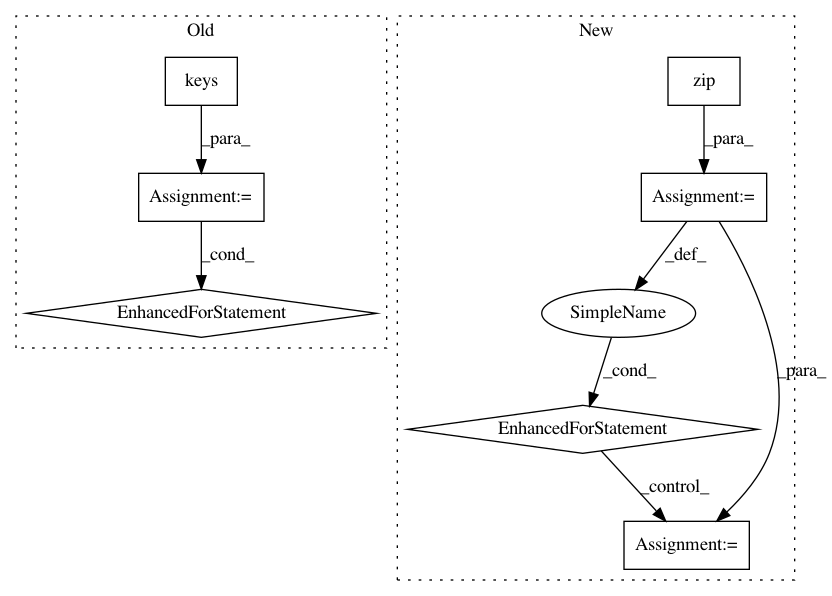

bb21b3314c57ec4208af8eed8041091cc51ec68a,anvio/profiler.py,BAMProfiler,generate_variabile_codons_table,#BAMProfiler#,288
Before Change
db_entry["coverage"] = e["coverage"]
db_entry["departure_from_reference"] = e["departure_from_reference"]
db_entry["codon_order_in_gene"] = codon_order
for codon in list(constants.codon_to_AA.keys()):
db_entry[codon] = e["frequencies"][codon]
variable_codons_table.append(db_entry)
variable_codons_table.store()
After Change
for split in contig.splits:
for gene_callers_id in split.SCV_profiles:
entries = zip(*split.SCV_profiles[gene_callers_id].values())
for entry in entries:
entry_dict = dict(zip(split.SCV_profiles[gene_callers_id].keys(), entry))
variable_codons_table.append(entry_dict)
variable_codons_table.store()
def generate_variabile_nts_table(self):
In pattern: SUPERPATTERN
Frequency: 3
Non-data size: 7
Instances
Project Name: merenlab/anvio
Commit Name: bb21b3314c57ec4208af8eed8041091cc51ec68a
Time: 2020-02-26
Author: kiefl.evan@gmail.com
File Name: anvio/profiler.py
Class Name: BAMProfiler
Method Name: generate_variabile_codons_table
Project Name: Coder-Yu/RecQ
Commit Name: 8e958d70fa54c0b249f7e6de27fd57cbaa7563d4
Time: 2016-11-13
Author: fqq0429@gmail.com
File Name: algorithm/rating/SlopeOne.py
Class Name: SlopeOne
Method Name: predict
Project Name: CellProfiler/CellProfiler
Commit Name: 53059cec9053a8429b7f0a8f06e6cbe1672b60e7
Time: 2013-01-16
Author: leek@broadinstitute.org
File Name: cellprofiler/modules/tests/test_groups.py
Class Name: TestGroups
Method Name: test_02_01_group_on_one